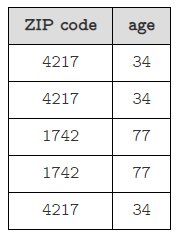
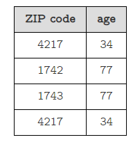
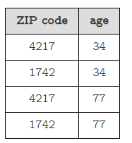

k-anonymity protects the privacy of individual persons by pooling their attributes into groups of at least k people. The method is based on the assumption that we have a dataset that contains N entries. Each entry consists of a list of D attributes that contain (non-sensitive) information about a person, such as age, gender, zip code of residence, etc. These attributes are called "quasi-identifiers", as combining several of them into a "super-identifier" can often uniquely identify a person even in large datasets (e.g. the combination of gender, age and zip code might be so specific that only a single person in a dataset has a given combination). In addition, the model assumes that the dataset contains a single sensitive attribute that contains e.g. information about a person's income and that we want to protect. The method can also be generalized to datasets with more than one sensitive attribute or datasets where there's no clear distinction between quasi-identifiers and sensitive attributes.
k-anonymity demands that we group individual rows/persons of our dataset into group of at least k rows/persons and replace the quasi-identifier attributes of these rows with aggregate quantities, such that it is no longer possible to read the individual values. This protects people by ensuring that an adversary who knows all values of a person's quasi-identifier attributes can only find out which group a person might belong to but not know if the person is really in the dataset.
A dataset is said to be k-anonymous if every combination of values for demographic columns in the dataset appears at least for k different records.
For example, this dataset is 2-anonymous:

This one isn't:

Notice that we need every combination of values to appear at least k times. Thus, even if each individual value of each column appears 2 times in the following dataset, it's not 2-anonymous:

The intuition is that when a dataset is k-anonymous for a sufficiently large k, the last requirement for a successful reidentification attack is broken. An attacker might find out the demographic information of their target using a secondary database, but then this demographic information will be linked to k different individuals, so it will be impossible to know which one is their info.
The two main building blocks used to transform a dataset into a k-anonymous table are generalization and suppression.
Follow the next section Link to explore more on k-anonymity.